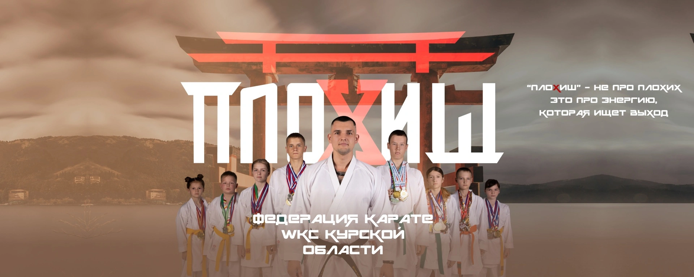
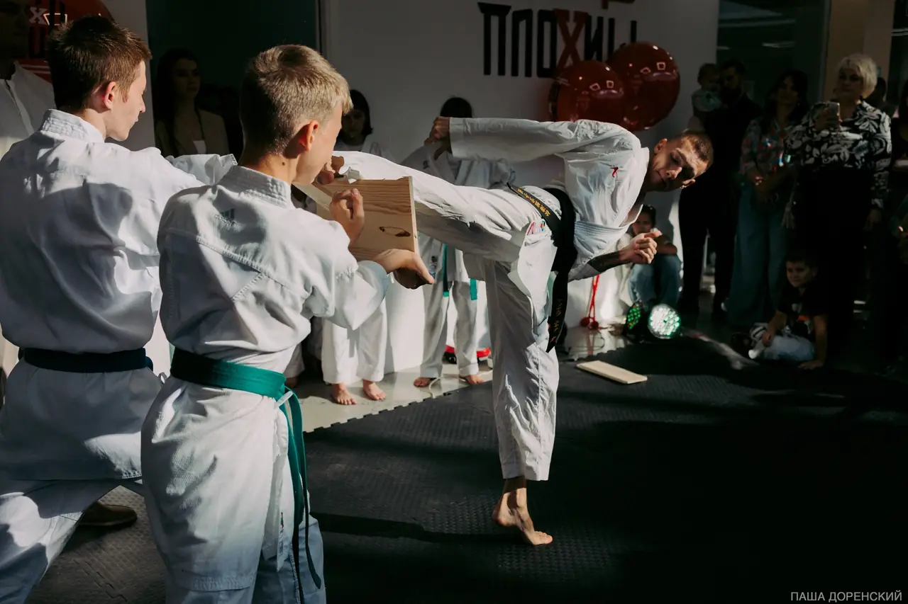

Детская база
Координация, гибкость, дисциплина и первые элементы каратэ в понятном ритме.

WKC Курск · каратэ для характера
Тренировки для детей, подростков и взрослых: техника, физическая форма, уважение к залу и уверенность в себе.
✓ Подберём группу по возрасту и уровню · можно без опыта
О клубе

«Плохиш» работает с техникой каратэ и с тем, что остается у спортсмена за пределами татами: собранность, спокойствие, уважение, умение держать темп.
База, кихон, ката и поединки без хаоса.
Регулярность, ответственность и работа с волнением.
Сильные растут рядом с сильными, но без лишнего давления.
Тренировки
Можно прийти с нуля. Тренер подберет нагрузку и объяснит, в какую группу лучше встать.
Координация, гибкость, дисциплина и первые элементы каратэ в понятном ритме.
Техника, спарринги, подготовка к соревнованиям и уверенная физическая форма.
Каратэ как тренировка тела, концентрации и личного режима.
Наставники
Откройте карточку, чтобы узнать подход тренера, достижения и кому подойдут его группы.

Президент Федерации WKC

Старший тренер
Первый шаг
Понятно даже тем, кто никогда не был в зале. Мы помним, как волнительно впервые перешагнуть порог, поэтому убрали лишние барьеры: без жёстких требований, экзаменов, сравнений с опытными ребятами и обязательной покупки дорогой экипировки.
Наша цель на первом занятии — влюбить ребёнка в движение и дать ему почувствовать себя в безопасности. Родители видят, как проходит тренировка, а ребёнок спокойно понимает: где зал, кто тренер, что будет дальше и почему здесь можно пробовать без страха ошибиться.
Мы не бросаем ребёнка сразу в общую группу. Перед занятием тренер лично встречает вас, мягко знакомится с будущим каратистом, спрашивает про любимые игры, узнаёт у родителей о здоровье и целях.
Покажем зал, раздевалки и место для родителей, чтобы у ребёнка не было чувства потерянности. С собой нужна обычная спортивная форма, вода и сменная обувь до татами. Кимоно заранее покупать не нужно.
Первая тренировка — это не изнуряющий кросс и не спарринги. Это понятная игра с элементами каратэ: лёгкая суставная разминка, баланс, простые движения руками и первые упражнения на мягкой лапе.
Главное правило — без давления. Если ребёнок устал, застеснялся или захотел воды, он может спокойно присесть и посмотреть со стороны. Нагрузка подбирается по самочувствию и настроению.
После тренировки мы не обещаем чемпиона мира за три месяца и не давим абонементом. Тренер честно расскажет, как ребёнок реагировал на нагрузку, что получилось лучше всего и какая группа подойдёт по возрасту и темпераменту.
Вы уходите с понятным расписанием, планом первых недель и спокойным ответом на главный вопрос: подходит ли каратэ вашему ребёнку сейчас.
Результаты
Фотоальбомы
Контакты
Напишите в VK или позвоните тренеру. Подскажем ближайшую группу, адрес зала и что взять с собой на первое занятие.
Дмитрий Юрьевич. Звонок или сообщение в удобное время.
Сообщество VK клубаНовости, фото, объявления и запись на пробную тренировку.
Зал 1 ул. 50 лет Октября, 141Понедельник, среда, пятница · 17:00-20:00
Зал 2 ТЦ Пушкинский, 4 этажВторник, четверг, суббота · 16:00-19:00